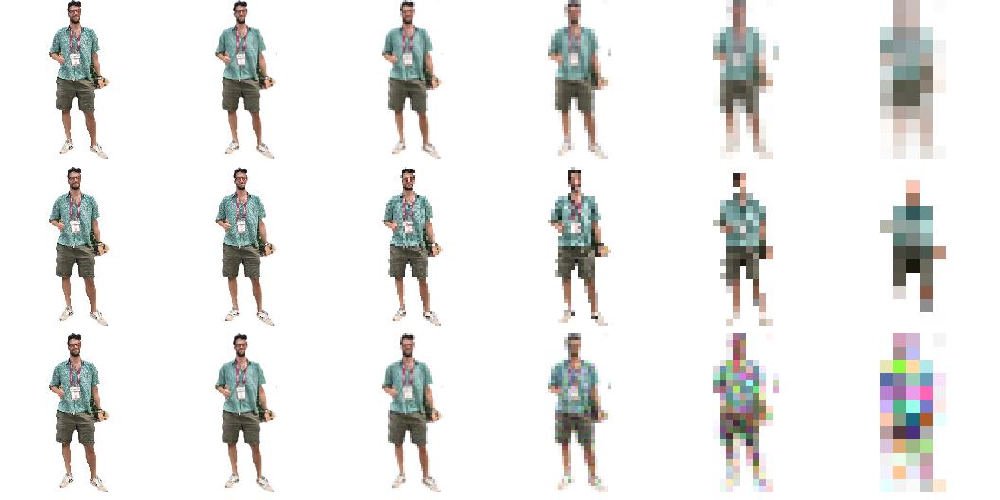

spagnoletti
Many many tiny spanish men — Anshuman Sinha
An image's mass is the sum of its pixel intensities, with the transparent background contributing zero. Copies drift and collide; every impact splits both participants into N lovely little Spaniards. Mass, momentum and energy are conserved throughout.
The physics
Mass
Alpha \(\alpha\) times luma \(L\), summed over the sprite. The background has zero alpha and so weighs nothing.
$$ M \;=\; \sum_{x} \alpha(x)\,L(x) $$
Split geometry
A copy scaled by \(s\) covers \(s^2\) as many pixels, so it carries \(s^2M\). Demanding \(N\) equal lovely little Spaniards fixes the scale — it is not a free parameter.
$$ s^2 M = \frac{M}{N} \quad\Longrightarrow\quad s = \frac{1}{\sqrt{N}} $$
So \(N=4\) halves each copy.
Split kinematics
Lovely little Spaniards recoil isotropically in the parent's rest frame. Evenly spaced directions make the recoil sum vanish, so momentum is exact.
$$ \mathbf{v}_i = \mathbf{v} + \mathbf{u}_i, \qquad |\mathbf{u}_i| = u, \qquad \sum_{i=1}^{N} \mathbf{u}_i = \mathbf{0} $$
That recoil costs \(\tfrac{1}{2}Mu^2\), paid from an internal budget \(U\). Kinetic energy gained equals internal energy spent, so \(E = T + U\) is exact.
$$ \Delta Q = \tfrac{1}{2} M u^{2}, \qquad U \longrightarrow \frac{U - \Delta Q}{N} $$
Both \(\Delta Q\) and \(U\) fall by \(N\) per generation, so \(U/\Delta Q\) drops by exactly one each split: \(U_0 = R\,\Delta Q_0\) buys exactly \(R\) generations. The budget is set as a population, since \(S\) seeds reach \(S N^{R}\) copies after \(R\) generations:
$$ R = \left\lceil \log_{N}\!\left(\frac{C}{S}\right) \right\rceil $$
Rounded up because generations are discrete — a budget of 1.94 of them would otherwise strand the swarm a whole generation short. The count is what stops it at \(C\) exactly, and nothing divides past that: a collision with no budget left is still just an elastic bounce. The ceiling also bounds the starting swarm, since you may not begin with more copies than you are allowed to have.
Copy–copy collision
Equal-area discs, resolved elastically along the contact normal \(\mathbf{n}\). Equal and opposite impulses, so momentum and kinetic energy are both exact. Only these impacts cause fission.
$$ j = \frac{2 m_a m_b}{m_a + m_b}\,(\mathbf{v}_{ab}\!\cdot\mathbf{n}), \qquad \mathbf{v}_a \mathrel{-}= \frac{j}{m_a}\mathbf{n}, \qquad \mathbf{v}_b \mathrel{+}= \frac{j}{m_b}\mathbf{n} $$
Boundary
A wall is an infinite mass: specular reflection flips the normal component and preserves speed, so kinetic energy survives but momentum does not. A wall is not another copy, so bouncing never splits anything. Switch to periodic and momentum becomes exact too.
$$ \mathbf{v} \longrightarrow \mathbf{v} - 2(\mathbf{v}\cdot\mathbf{n})\,\mathbf{n} $$
What is conserved
| Mass | Momentum | Energy \(T+U\) | |
|---|---|---|---|
| Split | exact | exact | exact |
| Copy–copy collision | exact | exact | exact |
| Reflecting wall | exact | absorbed | exact |
| Periodic boundary | exact | exact | exact |
Measured in-browser: under periodic boundaries \(|\mathbf{p}|\) held to four decimals across 330,066 collisions; mass and \(T+U\) held under both boundaries.
Ignition
Because fission needs contact, the swarm has a threshold. It is stochastic — whether the first impact happens at all decides the run. Copies alive after five seconds, five trials each:
| 6 seeds | 36, 6, 6, 72, 720 |
| 10 seeds | 40, 31, 28, 517, 133 |
| 14 seeds | 2417, 2507, 1037, 2507, 326 |
| 16 seeds | 1960, 502, 2452, 2500, 2500 |
Widest scatter in the middle, as expected near criticality. The collision rate goes as the square of the population; nothing in the code encodes the threshold.
The cascade as a forward operator
Halving an image is DeepInverse's Downsampling operator,
\(y = S(h * x)\) — antialias filter, then decimate. The cascade is that operator composed with itself,
so the swarm is a stack of measurements of one original.

PoissonNoise, photon count following the mass.The noise row is not decoration: mass is a photon count and each split quarters it, so a generation-\(k\) copy is measured with \(4^{-k}\) as many photons.
As a ComposedLinearPhysics chain the operator norm falls fourfold per generation while the
condition number stays near \(3\!-\!4\) (\(3.68,\ 3.91,\ 3.60,\ 2.69\) for \(k = 1 \ldots 4\)). The cascade
is rank-deficient, not ill-conditioned: it discards dimensions cleanly rather than scrambling what it keeps,
which is why many offset copies can undo it.
Sprites were cut from photographs on a black ground. A brightness key fails — the subjects wear dark clothing — so background is found topologically: dark pixels reachable from the border, plus large enclosed regions such as the gap under a raised arm. Masses are computed offline; DeepInverse is PyTorch and runs only there, while the live simulation reimplements the same halving in JavaScript.